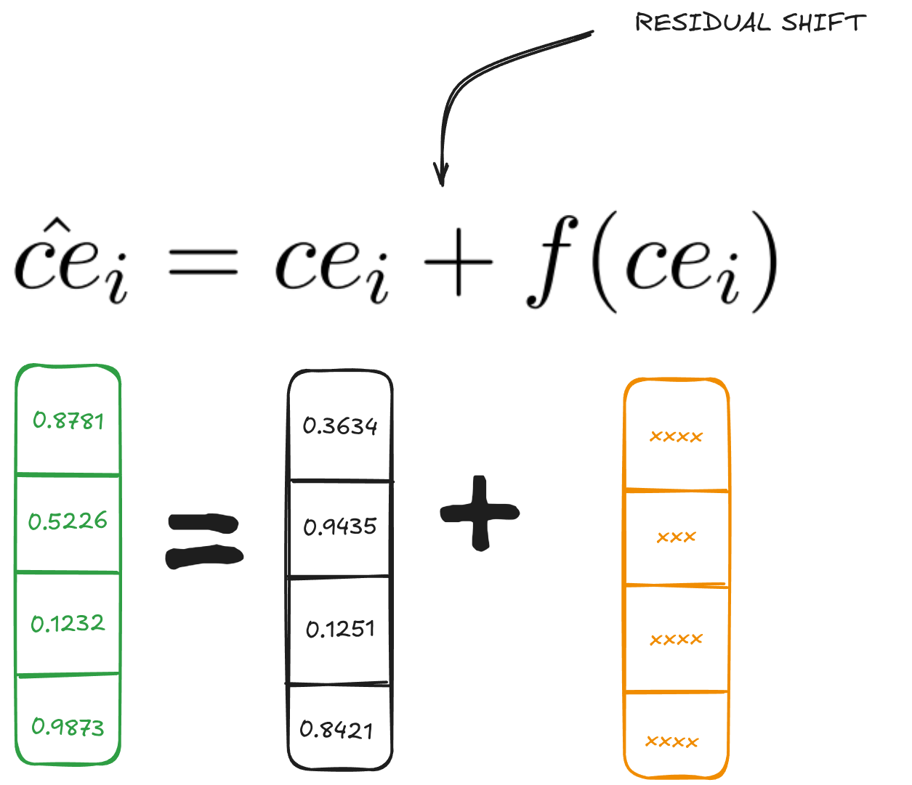
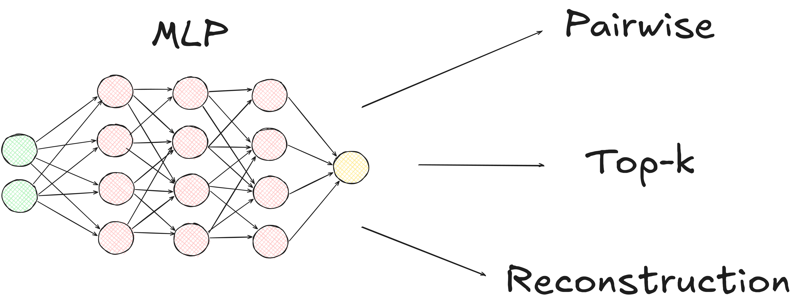
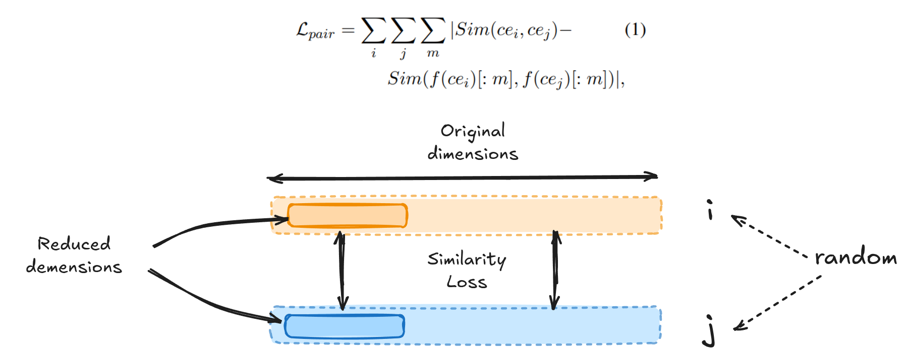
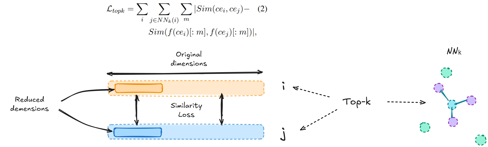
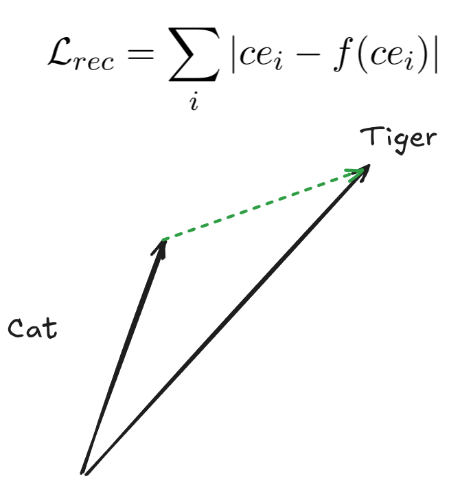
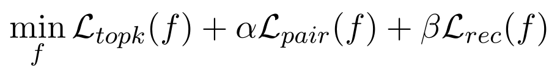
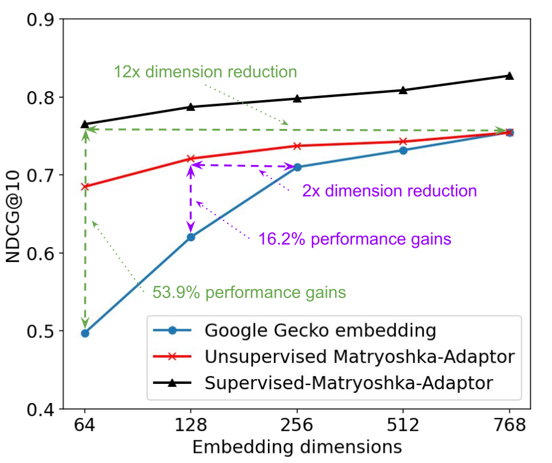
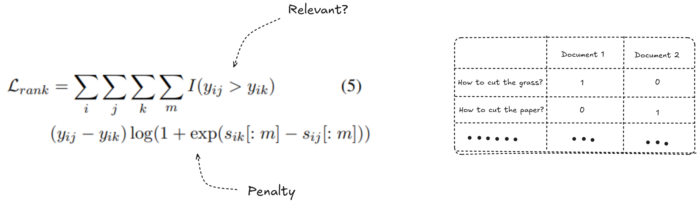
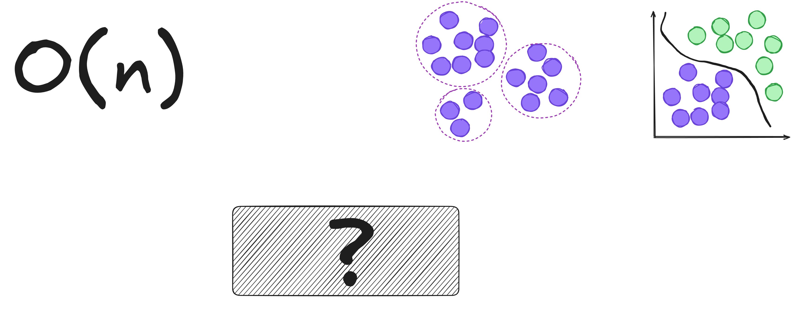

## Matryoshka-Adaptor ### How we can reduce the size of embedding vector without losing much information? ###### (Yoon et al., 2024) --- ## What are embeddings?  --- ## What we want to achieve?  - we want to preserve as much information as possible - having as long vector as possible ---  --- ## Matryoshka 2022 ###### (Kusupati et al., 2022)  --- ## Loss function  --- ## Loss function  --- <video controls style="max-width: 100%; height: auto;"> <source src="../Math-To-Manim/media/videos/matryoshka_objective_animation/1080p60/MatryoshkaObjective.mp4" type="video/mp4"> </video> --- ## We can cut the vector  --- ## It defines the more efficient way to create embeddings (pre-training process) - it's great when we have enough resources to train own embedding model from scratch, but... --- ## It would be great to have a way to improve already trained embedding model --- ## Matryoshka-Adaptor 2024 ###### (Yoon et al., 2024)  --- <p></p> --- <p></p> --- <p></p> --- <p></p> --- <p></p> --- <p></p> --- Two-fold (2x) reduction in dimensionality with zero loss in performance. It is a fantastic "free lunch"! --- <p></p> --- <p></p> --- --- 6x - 12x reduction without sacrificing performance --- What about PCA? > ''Also, PCA’s orthogonality > properties may limit its reliability for dimensionality reduction for vectors with highly non-linear > relationships, especially at high dimensionality.'' --- <video controls style="max-width: 100%; height: auto;"> <source src="../Math-To-Manim/media/videos/matryoshka_adaptor_animation/1080p60/MatryoshkaAdaptor.mp4" type="video/mp4"> </video> --- ## Summary --- ### Evaluated on various domains and tasks: - English - Multilingual - Multimodal --- <p></p> --- # Thank you for listening!